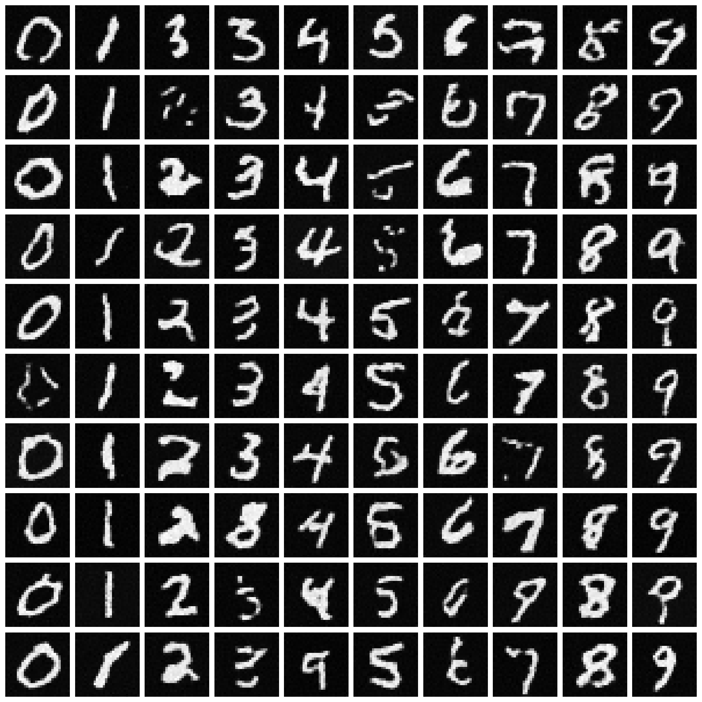

A class-conditional DDPM trained on MNIST. A small U-Net with FiLM-modulated ResNet-style blocks predicts the noise at each diffusion step, conditioned on a sinusoidal time embedding plus a learned class-label embedding. Pick a digit below and the model will denoise pure Gaussian noise into a handwritten sample.
Diffusion on MNIST
Generated 28×28 sample (upscaled)
Selected digit
—
Status
idle
Pick a digit, then press Generate.
Samples
10 samples per digit (one column each, 0–9) drawn at the end of training.

Live demo
Pick a digit and press Generate. The runner walks 1000 reverse-diffusion steps on CPU, so expect a few seconds per sample.
Code
Full source on GitHub — abridged here for readability.
import torch
import torch.nn as nn
beta_start = 1e-4
beta_end = 0.02
t_max_steps = 1000
def f_beta(i): return beta_start + (beta_end - beta_start) * (i / (t_max_steps - 1))
def f_alpha(i): return 1 - f_beta(i)
class TinyDiffusion(nn.Module):
"""U-Net with FiLM-conditioned blocks. Conditioning = sinusoidal(t) + Embedding(label)."""
def __init__(self):
super().__init__()
chanels = [64, 128, 256]
self.t_embed = nn.Sequential(nn.Linear(32, 32), nn.ReLU(), nn.Linear(32, 32))
self.l_embed = nn.Embedding(10, 32)
# encoder, bottleneck, decoder — each conv block followed by GroupNorm
# and FiLM (gamma, beta) generated from `cond` via a tiny linear layer.
# See diffusion_mnist.py for the full architecture.
def film(self, linear, cond):
gamma, beta = linear(cond).chunk(2, dim=1)
return gamma.unsqueeze(-1).unsqueeze(-1), beta.unsqueeze(-1).unsqueeze(-1)
beta_tensor = torch.tensor([f_beta(i) for i in range(t_max_steps)])
alpha_tensor = torch.tensor([f_alpha(i) for i in range(t_max_steps)])
alpha_prod_tensor = torch.cumprod(alpha_tensor, dim=0)
@torch.no_grad()
def sample_reverse(net, num_samples, value):
net.eval()
x_t = torch.randn(num_samples, 1, 28, 28)
for t in reversed(range(t_max_steps)):
t_en = torch.full((num_samples,), t, dtype=torch.long)
label = torch.full((num_samples,), value, dtype=torch.long)
eps_hat = net((x_t, t_en, label))
alpha_t = alpha_tensor[t]
alpha_bar_t = alpha_prod_tensor[t]
beta_t = beta_tensor[t]
mu_t = (1.0 / torch.sqrt(alpha_t)) * (
x_t - ((1.0 - alpha_t) / torch.sqrt(1.0 - alpha_bar_t)) * eps_hat
)
if t > 0:
x_t = mu_t + torch.sqrt(beta_t) * torch.randn_like(x_t)
else:
x_t = mu_t
return x_t
# Training loop: standard DDPM — sample t uniformly, noise the input
# with sqrt(alpha_bar_t) * x + sqrt(1 - alpha_bar_t) * eps, train MSE
# between predicted and true epsilon. 20 epochs, Adam(1e-4), cosine LR.